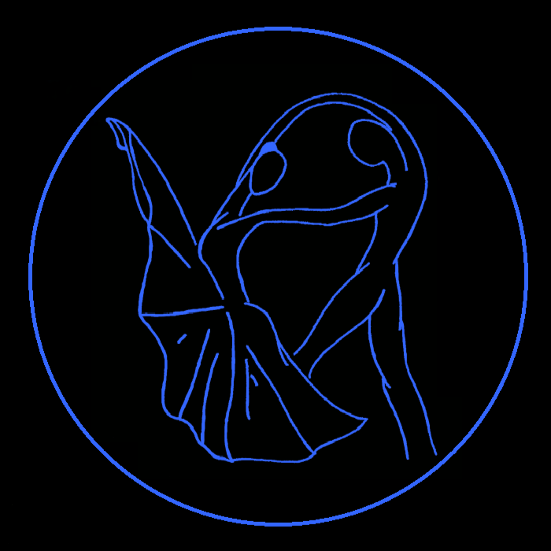

The Dancing Librarian
Jeremiah King applies his unique background in dance and Latin to the fields of digital librarianship and data visualization, supporting in-person and online scholarship, teaching, and research.
Where is Jeremiah?
